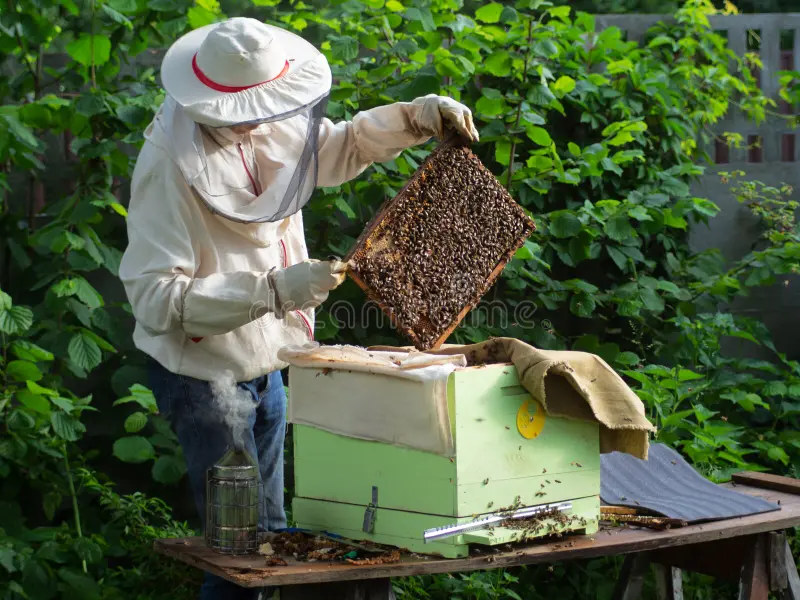
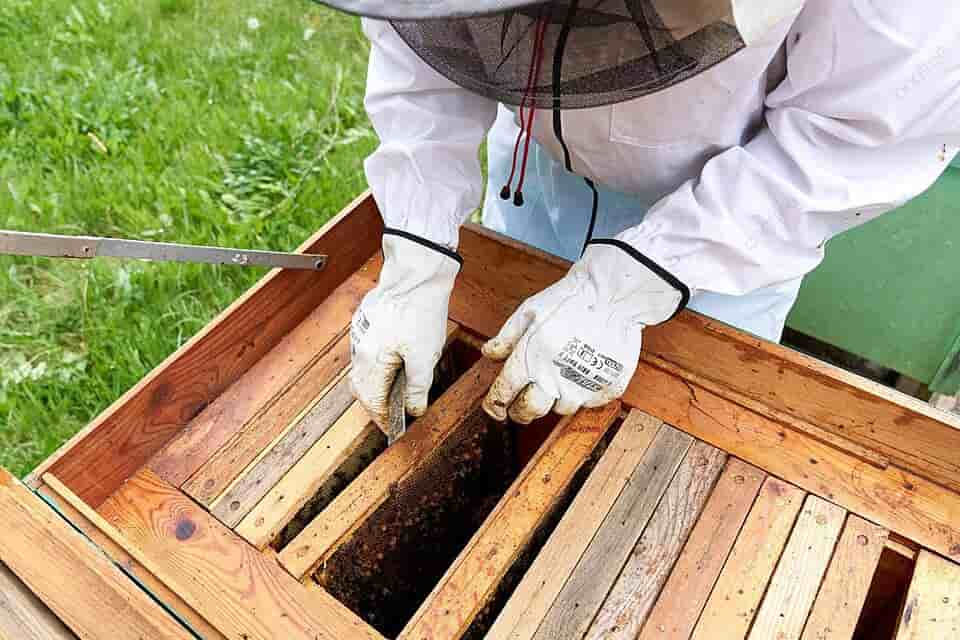
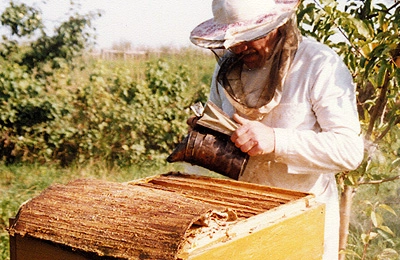

Правила осмотра ульев
Осмотр ульев является одним из важнейших аспектов заботы о пчелах в пчелиной пасеке. Это процедура, в ходе которой пчеловод проверяет состояние улья и здоровье пчёл. Вот несколько основных правил осмотра ульев:
Подготовка:

Перед осмотром ульев необходимо убедиться, что у вас есть все необходимые инструменты и средства защиты. Ваше снаряжение должно включать куртку с капюшоном, перчатки, дымовую машину для успокоения пчёл, зажигалку, а также необходимые инструменты, такие как шпатель, курковка и щуп. Важно также убедиться, что вы в хорошем здоровье и готовы к работе с пчёлами.
Безопасность:

Безопасность является приоритетом при осмотре ульев. Убедитесь, что вы надели защитное снаряжение, чтобы предотвратить укусы пчёл. Одевайтесь таким образом, чтобы пчёлы не могли проникнуть под вашу одежду. Также будьте осторожны при работе с дымовой машиной, чтобы избежать возгорания.
Время осмотра:
Лучше всего проводить осмотр ульев в тёплое и солнечное время суток, когда пчёлы наиболее активны и могут быть найдены в улье. Избегайте осмотра в сырую или дождливую погоду, когда пчёлы могут быть агрессивными и замкнутыми в улье.
Методичность:
Осмотр ульев должен проводиться методично и систематически. Начните с внешнего осмотра улья, затем переходите к внутренним частям. Это позволит вам не пропустить важные детали и оценить состояние каждой части улья.
Осторожность при перемещении рамок:
При извлечении рамок из улья будьте осторожны и избегайте резких движений, которые могут нарушить или повредить пчёл. Держите рамки за края, чтобы не повредить пчёл на поверхности сот. Также помните о том, что пчёлы могут быть нервными и агрессивными, поэтому старайтесь не волновать их лишний раз.
Внимательное наблюдение:

Осмотр ульев требует внимательного наблюдения за состоянием пчёл и улья. Обращайте внимание на количество пчёл, их активность, наличие яиц, личинок и корма. Также обратите внимание на признаки болезней и паразитов, которые могут влиять на здоровье пчёл и производство мёда.
Записи и документация:
Важно вести записи о каждом осмотре улья. Записывайте дату, время, погодные условия и результаты осмотра. Это поможет вам отслеживать изменения в пчелиной популяции и принимать необходимые меры для её здоровья и процветания. Кроме того, записи могут быть полезны для общения с другими пчеловодами и в случае необходимости обращения за помощью или консультацией.